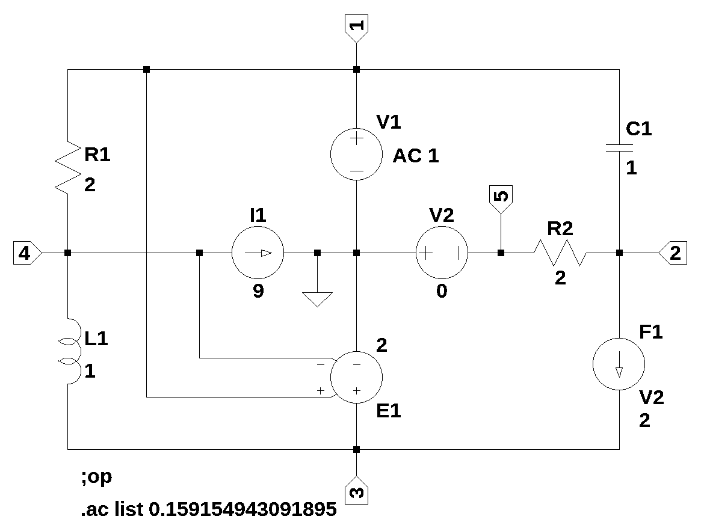
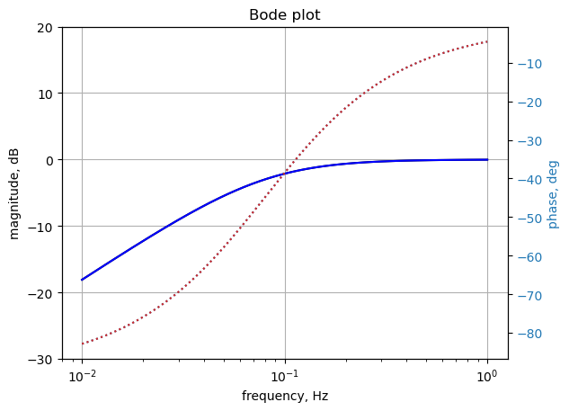

import os
from sympy import *
import numpy as np
from scipy import signal
import matplotlib.pyplot as plt
init_printing()7 test_3
This circuit is the same as test_1, but includes a capactior and inductor. AC analysis was performed at 1 rad/sec and over a range of frequencies. The results are compared to those obtained from LTSpice.

In the circuit V2 is set to zero volts and it’s the current through V2 that is used as a reference for F1. This is the net list generated by LTSpice.
* test_3.asc
R2 2 5 2
V1 1 0 0 AC 1
I1 4 0 9
V2 0 5 0
E1 3 0 1 4 2
F1 2 3 V2 2
R1 1 4 2
C1 1 2 1
L1 4 3 1
;op
.ac list 0.159154943091895
.backanno
.endThis is the modified net list, V1 line changed; also need to set the current source, I1, to zero, when solving for voltages and currents.
* test_3.asc
R2 2 5 2
V1 1 0 1
I1 4 0 9
V2 0 5 0
E1 3 0 1 4 2
F1 2 3 V2 2
R1 1 4 2
C1 1 2 1
L1 4 3 1
;op
.ac list 0.159154943091895
.backanno
.endThis netlist is read into the Symbolic Modified Nodal Analysis Jupyter notebook and the following circuit equations were generated.
⎛ 1 ⎞ v₄
-C₁⋅s⋅v₂ + I_V1 + v₁⋅⎜C₁⋅s + ──⎟ - ── = 0
⎝ R₁⎠ R₁
⎛ 1 ⎞ v₅
-C₁⋅s⋅v₁ + I_F1 + v₂⋅⎜C₁⋅s + ──⎟ - ── = 0
⎝ R₂⎠ R₂
I_Ea1 - I_F1 - I_L1 = 0
v₁ v₄
I_L1 - ── + ── = -I₁
R₁ R₁
v₂ v₅
-I_V2 - ── + ── = 0
R₂ R₂
v₁ = V₁
-v₅ = V₂
-ea₁⋅v₁ + ea₁⋅v₄ + v₃ = 0
I_F1 - I_V2⋅f₁ = 0
-I_L1⋅L₁⋅s - v₃ + v₄ = 0Copy the text strings generated by the Symbolic Modified Nodal Analysis Jupyter notebook to the cell below.
I1, R1, v2, V1, v4, I_V2, v3, s, C1, v1, L1, V2, f1, I_V1, ea1, I_L1, I_F1, v5, R2, I_Ea1 = symbols(' I1 R1 v2 V1 v4 I_V2 v3 s C1 v1 L1 V2 f1 I_V1 ea1 I_L1 I_F1 v5 R2 I_Ea1 ')
A = Matrix([[C1*s + 1/R1, -C1*s, 0, -1/R1, 0, 1, 0, 0, 0, 0], [-C1*s, C1*s + 1/R2, 0, 0, -1/R2, 0, 0, 0, 1, 0], [0, 0, 0, 0, 0, 0, 0, 1, -1, -1], [-1/R1, 0, 0, 1/R1, 0, 0, 0, 0, 0, 1], [0, -1/R2, 0, 0, 1/R2, 0, -1, 0, 0, 0], [1, 0, 0, 0, 0, 0, 0, 0, 0, 0], [0, 0, 0, 0, -1, 0, 0, 0, 0, 0], [-ea1, 0, 1, ea1, 0, 0, 0, 0, 0, 0], [0, 0, 0, 0, 0, 0, -f1, 0, 1, 0], [0, 0, -1, 1, 0, 0, 0, 0, 0, -L1*s]])
X = Matrix( [v1, v2, v3, v4, v5, I_V1, I_V2, I_Ea1, I_F1, I_L1] )
Z = Matrix( [0, 0, 0, -I1, 0, V1, V2, 0, 0, 0] )equ = Eq(A*X,Z)
equ\(\displaystyle \left[\begin{matrix}- C_{1} s v_{2} + I_{V1} + v_{1} \left(C_{1} s + \frac{1}{R_{1}}\right) - \frac{v_{4}}{R_{1}}\\- C_{1} s v_{1} + I_{F1} + v_{2} \left(C_{1} s + \frac{1}{R_{2}}\right) - \frac{v_{5}}{R_{2}}\\I_{Ea1} - I_{F1} - I_{L1}\\I_{L1} - \frac{v_{1}}{R_{1}} + \frac{v_{4}}{R_{1}}\\- I_{V2} - \frac{v_{2}}{R_{2}} + \frac{v_{5}}{R_{2}}\\v_{1}\\- v_{5}\\- ea_{1} v_{1} + ea_{1} v_{4} + v_{3}\\I_{F1} - I_{V2} f_{1}\\- I_{L1} L_{1} s - v_{3} + v_{4}\end{matrix}\right] = \left[\begin{matrix}0\\0\\0\\- I_{1}\\0\\V_{1}\\V_{2}\\0\\0\\0\end{matrix}\right]\)
7.1 Symbolic solution
symbolic_solution = solve(equ,X)
symbolic_solution\(\displaystyle \left\{ I_{Ea1} : \frac{- C_{1} I_{1} R_{1} R_{2} ea_{1} s - C_{1} I_{1} R_{1} R_{2} s - C_{1} L_{1} V_{1} f_{1} s^{2} - C_{1} L_{1} V_{2} f_{1} s^{2} - C_{1} R_{1} V_{1} ea_{1} f_{1} s - C_{1} R_{1} V_{1} f_{1} s - C_{1} R_{1} V_{2} ea_{1} f_{1} s - C_{1} R_{1} V_{2} f_{1} s + C_{1} R_{2} V_{1} s + I_{1} R_{1} ea_{1} f_{1} - I_{1} R_{1} ea_{1} + I_{1} R_{1} f_{1} - I_{1} R_{1} - V_{1} f_{1} + V_{1}}{C_{1} L_{1} R_{2} s^{2} + C_{1} R_{1} R_{2} ea_{1} s + C_{1} R_{1} R_{2} s - L_{1} f_{1} s + L_{1} s - R_{1} ea_{1} f_{1} + R_{1} ea_{1} - R_{1} f_{1} + R_{1}}, \ I_{F1} : \frac{- C_{1} V_{1} f_{1} s - C_{1} V_{2} f_{1} s}{C_{1} R_{2} s - f_{1} + 1}, \ I_{L1} : \frac{- I_{1} R_{1} ea_{1} - I_{1} R_{1} + V_{1}}{L_{1} s + R_{1} ea_{1} + R_{1}}, \ I_{V1} : \frac{- C_{1} I_{1} L_{1} R_{2} s^{2} + C_{1} L_{1} V_{1} f_{1} s^{2} - C_{1} L_{1} V_{1} s^{2} + C_{1} L_{1} V_{2} f_{1} s^{2} - C_{1} L_{1} V_{2} s^{2} + C_{1} R_{1} V_{1} ea_{1} f_{1} s - C_{1} R_{1} V_{1} ea_{1} s + C_{1} R_{1} V_{1} f_{1} s - C_{1} R_{1} V_{1} s + C_{1} R_{1} V_{2} ea_{1} f_{1} s - C_{1} R_{1} V_{2} ea_{1} s + C_{1} R_{1} V_{2} f_{1} s - C_{1} R_{1} V_{2} s - C_{1} R_{2} V_{1} s + I_{1} L_{1} f_{1} s - I_{1} L_{1} s + V_{1} f_{1} - V_{1}}{C_{1} L_{1} R_{2} s^{2} + C_{1} R_{1} R_{2} ea_{1} s + C_{1} R_{1} R_{2} s - L_{1} f_{1} s + L_{1} s - R_{1} ea_{1} f_{1} + R_{1} ea_{1} - R_{1} f_{1} + R_{1}}, \ I_{V2} : \frac{- C_{1} V_{1} s - C_{1} V_{2} s}{C_{1} R_{2} s - f_{1} + 1}, \ v_{1} : V_{1}, \ v_{2} : \frac{C_{1} R_{2} V_{1} s + V_{2} f_{1} - V_{2}}{C_{1} R_{2} s - f_{1} + 1}, \ v_{3} : \frac{I_{1} L_{1} R_{1} ea_{1} s + R_{1} V_{1} ea_{1}}{L_{1} s + R_{1} ea_{1} + R_{1}}, \ v_{4} : \frac{- I_{1} L_{1} R_{1} s + L_{1} V_{1} s + R_{1} V_{1} ea_{1}}{L_{1} s + R_{1} ea_{1} + R_{1}}, \ v_{5} : - V_{2}\right\}\)
left_side = list(symbolic_solution.keys())
right_side = list(symbolic_solution.values())
for i in range(len(symbolic_solution)):
pprint(Eq(left_side[i],right_side[i]))v₁ = V₁
C₁⋅R₂⋅V₁⋅s + V₂⋅f₁ - V₂
v₂ = ───────────────────────
C₁⋅R₂⋅s - f₁ + 1
I₁⋅L₁⋅R₁⋅ea₁⋅s + R₁⋅V₁⋅ea₁
v₃ = ──────────────────────────
L₁⋅s + R₁⋅ea₁ + R₁
-I₁⋅L₁⋅R₁⋅s + L₁⋅V₁⋅s + R₁⋅V₁⋅ea₁
v₄ = ─────────────────────────────────
L₁⋅s + R₁⋅ea₁ + R₁
v₅ = -V₂
2 2 2 2
- C₁⋅I₁⋅L₁⋅R₂⋅s + C₁⋅L₁⋅V₁⋅f₁⋅s - C₁⋅L₁⋅V₁⋅s + C₁⋅L₁⋅V₂⋅f₁⋅s - C₁⋅L
I_V1 = ───────────────────────────────────────────────────────────────────────
2
₁⋅V₂⋅s + C₁⋅R₁⋅V₁⋅ea₁⋅f₁⋅s - C₁⋅R₁⋅V₁⋅ea₁⋅s + C₁⋅R₁⋅V₁⋅f₁⋅s - C₁⋅R₁⋅V₁⋅s + C₁
──────────────────────────────────────────────────────────────────────────────
2
C₁⋅L₁⋅R₂⋅s + C₁⋅R₁⋅R₂⋅ea₁⋅s + C₁⋅R₁⋅R₂⋅s - L₁⋅f₁⋅s + L₁⋅s - R₁⋅e
⋅R₁⋅V₂⋅ea₁⋅f₁⋅s - C₁⋅R₁⋅V₂⋅ea₁⋅s + C₁⋅R₁⋅V₂⋅f₁⋅s - C₁⋅R₁⋅V₂⋅s - C₁⋅R₂⋅V₁⋅s + I
──────────────────────────────────────────────────────────────────────────────
a₁⋅f₁ + R₁⋅ea₁ - R₁⋅f₁ + R₁
₁⋅L₁⋅f₁⋅s - I₁⋅L₁⋅s + V₁⋅f₁ - V₁
────────────────────────────────
-C₁⋅V₁⋅s - C₁⋅V₂⋅s
I_V2 = ──────────────────
C₁⋅R₂⋅s - f₁ + 1
2 2
-C₁⋅I₁⋅R₁⋅R₂⋅ea₁⋅s - C₁⋅I₁⋅R₁⋅R₂⋅s - C₁⋅L₁⋅V₁⋅f₁⋅s - C₁⋅L₁⋅V₂⋅f₁⋅s -
I_Ea1 = ──────────────────────────────────────────────────────────────────────
C₁⋅L₁⋅R₂⋅s
C₁⋅R₁⋅V₁⋅ea₁⋅f₁⋅s - C₁⋅R₁⋅V₁⋅f₁⋅s - C₁⋅R₁⋅V₂⋅ea₁⋅f₁⋅s - C₁⋅R₁⋅V₂⋅f₁⋅s + C₁⋅R₂
──────────────────────────────────────────────────────────────────────────────
2
+ C₁⋅R₁⋅R₂⋅ea₁⋅s + C₁⋅R₁⋅R₂⋅s - L₁⋅f₁⋅s + L₁⋅s - R₁⋅ea₁⋅f₁ + R₁⋅ea₁ - R₁⋅f₁
⋅V₁⋅s + I₁⋅R₁⋅ea₁⋅f₁ - I₁⋅R₁⋅ea₁ + I₁⋅R₁⋅f₁ - I₁⋅R₁ - V₁⋅f₁ + V₁
────────────────────────────────────────────────────────────────
+ R₁
-C₁⋅V₁⋅f₁⋅s - C₁⋅V₂⋅f₁⋅s
I_F1 = ────────────────────────
C₁⋅R₂⋅s - f₁ + 1
-I₁⋅R₁⋅ea₁ - I₁⋅R₁ + V₁
I_L1 = ───────────────────────
L₁⋅s + R₁⋅ea₁ + R₁ 7.2 Numeric solution
Substitue the element values into the equations and solve for unknown node voltages and currents. Need to set the current source, I1, to zero.
# enter the element values
equ1a = equ.subs({
R2:2.000000,
V1:1.000000,
I1:0.000000,
V2:0.000000,
ea1:2.000000,
f1:2.000000,
R1:2.000000,
C1:1.000000,
L1:1.000000})
equ1a # display the equations\(\displaystyle \left[\begin{matrix}I_{V1} - 1.0 s v_{2} + v_{1} \cdot \left(1.0 s + 0.5\right) - 0.5 v_{4}\\I_{F1} - 1.0 s v_{1} + v_{2} \cdot \left(1.0 s + 0.5\right) - 0.5 v_{5}\\I_{Ea1} - I_{F1} - I_{L1}\\I_{L1} - 0.5 v_{1} + 0.5 v_{4}\\- I_{V2} - 0.5 v_{2} + 0.5 v_{5}\\v_{1}\\- v_{5}\\- 2.0 v_{1} + v_{3} + 2.0 v_{4}\\I_{F1} - 2.0 I_{V2}\\- 1.0 I_{L1} s - v_{3} + v_{4}\end{matrix}\right] = \left[\begin{matrix}0\\0\\0\\0\\0\\1.0\\0\\0\\0\\0\end{matrix}\right]\)
Solve for voltages and currents in terms of Laplace variable s.
u1 = solve(equ1a,X)
u1\(\displaystyle \left\{ I_{Ea1} : \frac{- 2.0 s^{2} - 10.0 s - 1.0}{2.0 s^{2} + 11.0 s - 6.0}, \ I_{F1} : - \frac{2.0 s}{2.0 s - 1.0}, \ I_{L1} : \frac{1}{s + 6.0}, \ I_{V1} : \frac{s^{2} + 4.0 s + 1.0}{2.0 s^{2} + 11.0 s - 6.0}, \ I_{V2} : - \frac{s}{2.0 s - 1.0}, \ v_{1} : 1.0, \ v_{2} : \frac{2.0 s}{2.0 s - 1.0}, \ v_{3} : \frac{4.0}{s + 6.0}, \ v_{4} : \frac{s + 4.0}{s + 6.0}, \ v_{5} : 0.0\right\}\)
7.3 AC analysis
Solve equations for \(\omega\) equal to 1 radian per second, s = 1j.
equ1a_1rad_per_s = equ1a.subs({s:1j})
equ1a_1rad_per_s # display the equations\(\displaystyle \left[\begin{matrix}I_{V1} + v_{1} \cdot \left(0.5 + 1.0 i\right) - 1.0 i v_{2} - 0.5 v_{4}\\I_{F1} - 1.0 i v_{1} + v_{2} \cdot \left(0.5 + 1.0 i\right) - 0.5 v_{5}\\I_{Ea1} - I_{F1} - I_{L1}\\I_{L1} - 0.5 v_{1} + 0.5 v_{4}\\- I_{V2} - 0.5 v_{2} + 0.5 v_{5}\\v_{1}\\- v_{5}\\- 2.0 v_{1} + v_{3} + 2.0 v_{4}\\I_{F1} - 2.0 I_{V2}\\- 1.0 i I_{L1} - v_{3} + v_{4}\end{matrix}\right] = \left[\begin{matrix}0\\0\\0\\0\\0\\1.0\\0\\0\\0\\0\end{matrix}\right]\)
ans1 = solve(equ1a_1rad_per_s,X)
ans1\(\displaystyle \left\{ I_{Ea1} : -0.637837837837838 + 0.372972972972973 i, \ I_{F1} : -0.8 + 0.4 i, \ I_{L1} : 0.162162162162162 - 0.027027027027027 i, \ I_{V1} : 0.237837837837838 - 0.172972972972973 i, \ I_{V2} : -0.4 + 0.2 i, \ v_{1} : 1.0, \ v_{2} : 0.8 - 0.4 i, \ v_{3} : 0.648648648648649 - 0.108108108108108 i, \ v_{4} : 0.675675675675676 + 0.0540540540540541 i, \ v_{5} : 0.0\right\}\)
for name, value in ans1.items():
print('{:5s}: mag: {:10.6f} phase: {:11.5f} deg'.format(str(name),float(abs(value)),float(arg(value)*180/np.pi)))v1 : mag: 1.000000 phase: 0.00000 deg
v2 : mag: 0.894427 phase: -26.56505 deg
v3 : mag: 0.657596 phase: -9.46232 deg
v4 : mag: 0.677834 phase: 4.57392 deg
v5 : mag: 0.000000 phase: nan deg
I_V1 : mag: 0.294086 phase: -36.02737 deg
I_V2 : mag: 0.447214 phase: 153.43495 deg
I_Ea1: mag: 0.738882 phase: 149.68322 deg
I_F1 : mag: 0.894427 phase: 153.43495 deg
I_L1 : mag: 0.164399 phase: -9.46232 degThe solution obtained from LTSpice at a frequency of 0.159155 Hz is shown below.
--- AC Analysis ---
frequency: 0.159155 Hz
V(2): mag: 0.894427 phase: -26.5651° voltage
V(5): mag: 0 phase: 0° voltage
V(1): mag: 1 phase: 0° voltage
V(4): mag: 0.677834 phase: 4.57392° voltage
V(3): mag: 0.657596 phase: -9.46232° voltage
I(C1): mag: 0.447214 phase: 153.435° device_current
I(F1): mag: 0.894427 phase: 153.435° device_current
I(L1): mag: 0.164399 phase: -9.46232° device_current
I(I1): mag: 0 phase: 0° device_current
I(R2): mag: 0.447214 phase: -26.5651° device_current
I(R1): mag: 0.164399 phase: -9.46232° device_current
I(E1): mag: 0.738882 phase: 149.683° device_current
I(V1): mag: 0.294086 phase: -36.0274° device_current
I(V2): mag: 0.447214 phase: 153.435° device_currentThe LTSpice results are the same.
7.4 AC Sweep
Looking at node 2 voltage and comparing the results with those obtained from LTSpice. Thr frequenct weep is from 0.01 Hz to 1 Hz.
H = u1[v2]
H\(\displaystyle \frac{2.0 s}{2.0 s - 1.0}\)
num, denom = fraction(H) #returns numerator and denominator
# convert symbolic to numpy polynomial
a = np.array(Poly(num, s).all_coeffs(), dtype=float)
b = np.array(Poly(denom, s).all_coeffs(), dtype=float)
system_c1 = (a, b) # system for circuit 1x = np.linspace(0.01*2*np.pi, 1*2*np.pi, 10000, endpoint=True)
w_c1, mag_c1, phase_c1 = signal.bode(system_c1, w=x) # returns: rad/s, mag in dB, phase in degLoad the csv file of node 2 voltage over the sweep range and plot along with the results obtained from SymPy.
os.chdir('/home/jeff32/Documents/Solving Electrical Engineering Problems with Python Blog/MNA Test Circuits/test_3/') # change directory to net list location
fn = 'test_3.csv' # data from LTSpice
LTSpice_data = np.genfromtxt(fn, delimiter=',')
# change the working director back to the Jupyter folder
os.chdir('/home/jeff32/Documents/JupyterLab/Node Analysis/') # initaliaze some empty arrays
frequency = np.zeros(len(LTSpice_data))
voltage = np.zeros(len(LTSpice_data)).astype(complex)
# convert the csv data to complez numbers and store in the array
for i in range(len(LTSpice_data)):
frequency[i] = LTSpice_data[i][0]
voltage[i] = LTSpice_data[i][1] + LTSpice_data[i][2]*1jfig, ax1 = plt.subplots()
ax1.set_ylabel('magnitude, dB')
ax1.set_xlabel('frequency, Hz')
plt.semilogx(frequency, 20*np.log10(np.abs(voltage)),'-k') # Bode magnitude plot
plt.semilogx(w_c1/(2*np.pi), mag_c1,'-b') # Bode magnitude plot
ax1.tick_params(axis='y')
ax1.set_ylim((-30,20))
plt.grid()
# instantiate a second y-axes that shares the same x-axis
ax2 = ax1.twinx()
color = 'tab:blue'
plt.semilogx(frequency, np.angle(voltage)*180/np.pi,':',color=color) # Bode phase plot
plt.semilogx(w_c1/(2*np.pi), phase_c1,':',color='tab:red') # Bode phase plot
ax2.set_ylabel('phase, deg',color=color)
ax2.tick_params(axis='y', labelcolor=color)
#ax2.set_ylim((-5,25))
plt.title('Bode plot')
plt.show()
The SymPy and LTSpice results overlay each other.